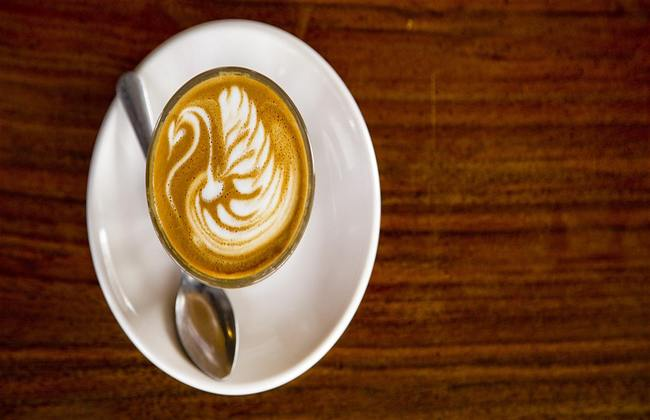
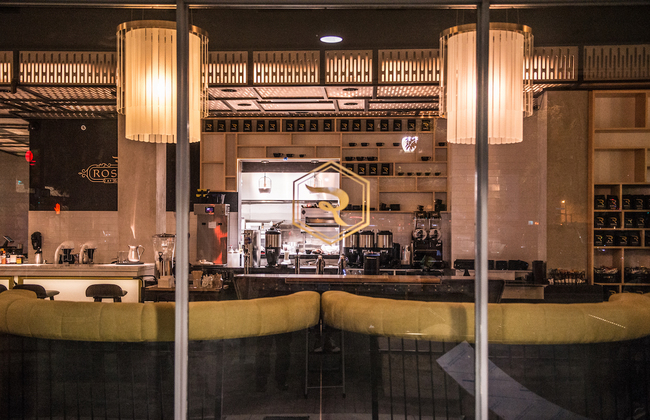
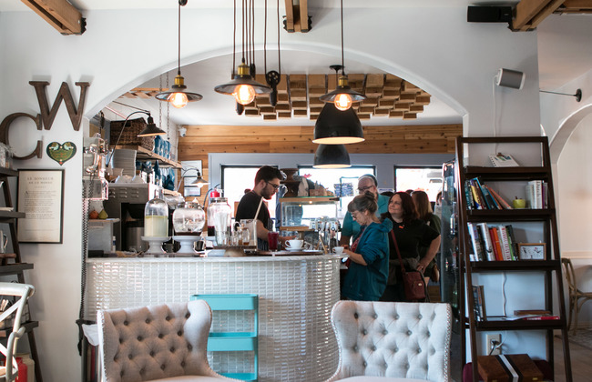
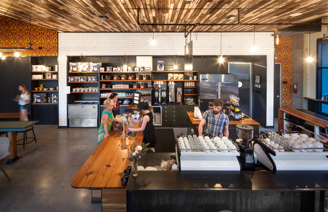

A Mini San Antonio Coffee Lover's Guide
Great Shops To Visit During Your Next Caffeine Craze

Rosella Coffee Company
A Multipurpose Gathering Location
Whether you're looking for a swanky place to enjoy a cocktail after work or a cup of coffee to start your day, Rosella's at the Rand is your one-stop shop for caffeinated pleasures. After opening it's first industrial location off Jones and Broadway, Rosella's quickly became a local staple in the coffee community. They have their own speciality roast created in partnership with Austin Roasting Company that allows them to create a unique flavor profile for their drinks. During their brunch service at the Rand location, you can enjoy live jazz music paired with a delicious serving of avocado toast. Keep this spot in mind for your next weekend outing, business meeting, or a place to simply get away from it all.
Common Wealth Coffee House
Serving the community with Uncommon Quality.
Cozy and inviting, Common Wealth is just as charming as it is tasty. Their home made french pastries are absolutely delicious and leave you wanting for more. Hidden away in Alamo Heights, this adorable reconverted cottage home radiates eclectic energy. They even have friendly chickens and a community garden in their back patio for your family to enjoy. They currently offer coffee roasted by Cuvee Coffee from Austin, Texas, and also offer single origin batches that can be made to order in a french press. If you're looking for culture, community, and great pastries, Common Wealth is the shop for you.
Local Coffee
Local Coffee has coffee down to a science.
Created by a group of coffee aficionados, their desire for excellent beans and good brewing techniques is shown in every cup served. Their main location at the Pearl is one of nine and really captivates the essence of a true coffee shop. With an open plan for the bar area, you are able witness the creation of each drink while enjoying the atmosphere of the cafe. They are partnered with Merit Roasting and do offer wholesale options for their roasts. Although their menu is centered around coffee, you are still able to pick up light snacks such as pre-packaged sandwiches, parfaits, and unique baked goods provided by Bakery Lorraine. This is a great place to visit if you're looking to bulk up on your coffee knowledge or simply enjoy a wonderfully crafted latte.